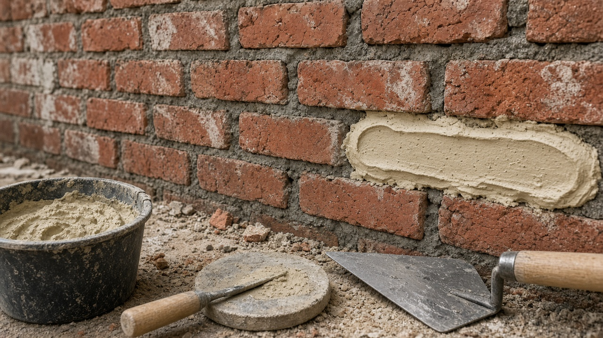

Mortar Smash › Lime vs cement mortar
Short answer
Lime mortar breathes and flexes; cement mortar is stronger and denser. Soft or historic brick almost always wants lime or a lime-rich mix. Modern dense brick, block, below-grade work and paving usually take cement or cement-lime (ASTM Type N/S/M) mixes. The wrong hard joint on soft brick causes spalling long before the mortar itself fails.

How each binder behaves
- Non-hydraulic lime (putty or hydrated lime): sets by taking up carbon dioxide. Slow, permeable, self-healing of fine cracks. Ideal for soft historic fabric when time and curing are managed.
- Natural hydraulic lime (NHL): partial hydraulic set plus carbonation. NHL 2 / 3.5 / 5 give a graded strength ladder for exterior lime work without jumping to Portland cement.
- Portland cement: fast hydraulic set, high strength, lower vapour permeability. Excellent for engineering brick and structural modern masonry; risky as a neat hard joint on soft facing brick.
- Cement-lime: Portland cement plus hydrated lime plus sand (the ASTM C270 proportion route). Workability of lime with usable early strength — the everyday Type N / S site mix.
Choosing for the brick, not the bag
Ask three questions before opening a bag:
- How hard and dense is the brick or stone?
- Is the wall above grade and exposed to rain and frost, or sheltered / interior?
- Does the existing joint look sandy and soft, or hard and grey?
If the brick is softer than a thumbnail scrape and the old joint crumbles easily, stay with lime or a weak lime-rich mix. If you are laying dense concrete block or Class A engineering brick to a modern spec, use the cement or cement-lime type the drawing calls for. Our Types N, S, M and O guide maps those US labels to jobs; the mortar calculator sizes cement and sand once the ratio is set.
Curing differences that bite on site
Lime and NHL work need protection from rapid drying, hard frost and driving rain while they carbonate. Cement mixes need moisture for hydration in the first day or two but reach handling strength much sooner. Do not judge a lime joint at 24 hours by cement habits — it will still be soft and that is often correct.
Lime vs cement FAQ
What is the difference between lime mortar and cement mortar?
Lime mortar sets mainly by carbonation of lime with air (and, for natural hydraulic lime, some hydraulic set). Cement mortar sets by hydration of Portland cement with water and reaches higher early strength. Lime mixes are more vapour-permeable and flexible; cement mixes are stronger and denser.
When should I use lime mortar on brick?
Use lime-rich or pure lime mortar on soft, porous or historic brick, on solid masonry that must breathe, and wherever a hard cement joint has already damaged the face. Conservation work on pre-1919 brick buildings commonly specifies NHL or lime putty mixes matched to the existing joint.
When is cement mortar the right choice?
Modern dense engineering brick, concrete masonry, below-grade work and paving that need high early strength usually take cement or cement-lime mortars (ASTM Types N, S or M). Follow the unit maker and the structural specification.
What is NHL and how does it differ from hydrated lime?
Natural hydraulic lime (NHL 2, 3.5, 5) is burnt from limestone with clay impurities so it sets partly under water. Hydrated lime (building lime) is non-hydraulic and sets only by carbonation. NHL grades give a useful middle strength for exterior lime work; hydrated lime is often added to cement:sand mixes to improve workability (cement-lime mortar).
Can I mix cement into lime mortar for speed?
Small cement additions change the mortar a lot: strength rises, permeability falls, and the mix may no longer suit soft brick. If the specification calls for lime mortar, do not ‘improve’ it with cement on site. If you need a practical site mix for modern brick, specify a cement-lime Type N style mix instead of adulterating a conservation lime mix.
Which mortar for repointing an old brick house?
Match the existing joint. Rake a sample, note colour and hardness, and prefer a lime or lime-rich mix no harder than the brick. Hard grey cement ribbon pointing on soft Victorian brick is a common failure mode. See our repointing tips.
Last updated 5 November 2026. General information only; conservation projects should follow the appointed specification.